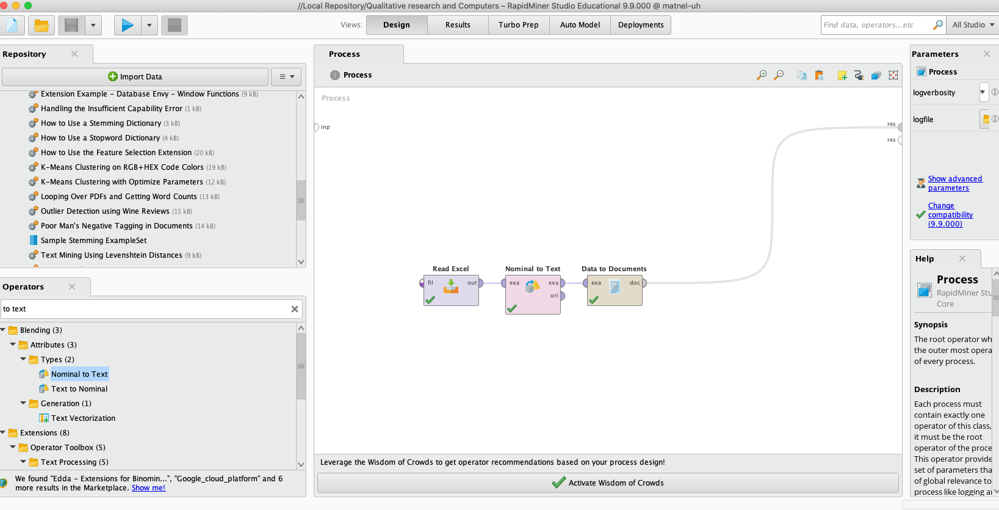
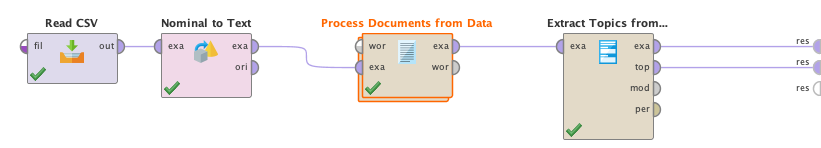
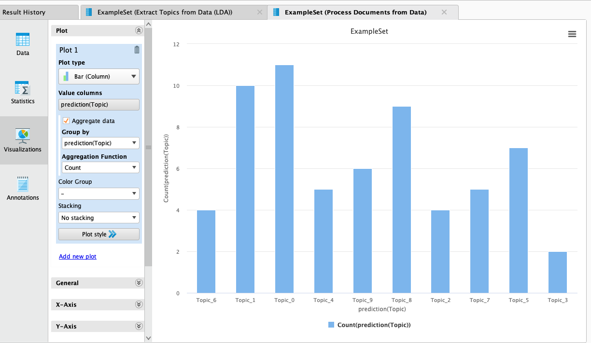

RapidMinder
Starting to use RapidMinder
Install RapidMiner Studio via their educational program. This gives you free access to these tools during your studies.
Once installed, install following extensions from the RapidMiner Studio: - Text processing - Operator Toolbox
Rapidminer environment
RapidMinder allows you to develop your own data analysis process using various operators. Operators have both inputs and outputs: outputs of previous steps are used as inputs of additional steps of the process. These are connected by drawing a line from the output into next steps input. Some operators are subprocess operators which can be opened, and more details can be entered.
RapidMiner user interface shows the design of the process with operators on the left side menu and help on each operator on the right-side menu. A process can be run using the blue play button on the top menu. This changes the view from Design into Results and shows the outcome of your process.

Getting data ready for analysis
After importing the documents, you must do pre-processing of the data and create a word vector: use Process Documents from Data block to tokenise (separate each word), lowercase it, remove stop words, stem text etc., and finally transform data to documents.
Supervised machine learning
iframe width="560" height="315" src="https://www.youtube.com/embed/vwIWSIlP6FA?start=85" title="YouTube video player" frameborder="0" allow="accelerometer; autoplay; clipboard-write; encrypted-media; gyroscope; picture-in-picture" allowfullscreen>
There are many different algorithms which can be used, to see all of them open Modelling and Predictive. The overall goal in social sciences is often to classify a small sample of data based on manual annotations and then expand that classification to another dataset. In this case, you must train and store the model like above and then apply it to remaining data not already classified.
The Results tab will present performance metrics as well as some basic data on the different features (known attribute) across the different groups to give a bit more detail on which words seem to be most distinguish per class.
Unsupervised machine learning
There are various unsupervised machine learning algorithms which one might want to use. Use the "Extract Topics from Data (LDA)" module to use topic modelling on RapidMiner and configure it to use in principle the same pre-processing process and just using the right module:

The Results tab includes a table of different words for each topic and for each unit of analysis (document) indications on what topics it belongs to, for example illustrate how many documents belong to each topic - we see that Topic 0 seems to be most common.

For more extensive use of clustering approaches with the data, see